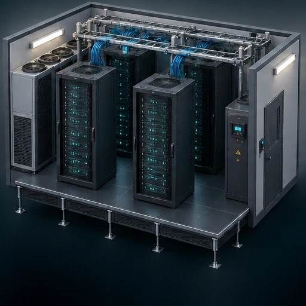

Property potential
Identify suitable space in offices, hotels and other commercial buildings.
Edge data centres
Distributed Compute Edge Solutions (DCES) explores modular AI infrastructure within commercial properties across the UK.
Concept animation

The opportunity
Commercial buildings can offer space and infrastructure for a new generation of distributed compute. We assess how underused areas can be adapted for modular, GPU-powered data centres.
Our approach brings property, power, connectivity and commercial structuring together. Capacity and delivery programmes depend on each site’s technical assessment and approvals.
Identify suitable space in offices, hotels and other commercial buildings.
Assess power, cooling, fibre connectivity, access and resilience.
Develop a structure suited to building owners and operating partners.
Site requirements
The process
We start with an initial discussion and site information, followed by technical and commercial feasibility.
Review space, power, cooling, connectivity and constraints.
Agree the scope, commercial terms and responsibilities.
Progress design, permissions, installation and operational arrangements with the relevant partners.
A conversation starts here
Your building. Your business. Your next opportunity. Start a conversation with our team.